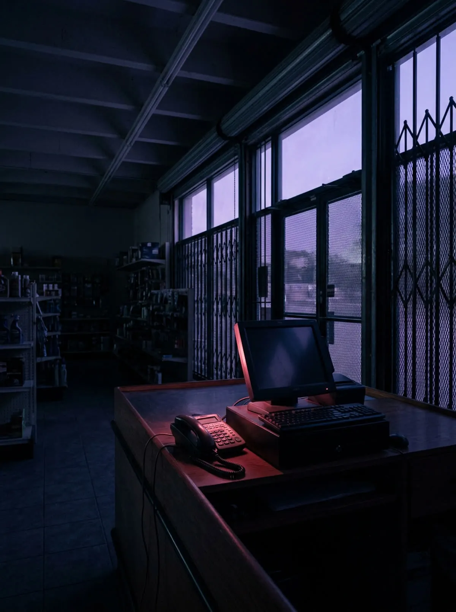
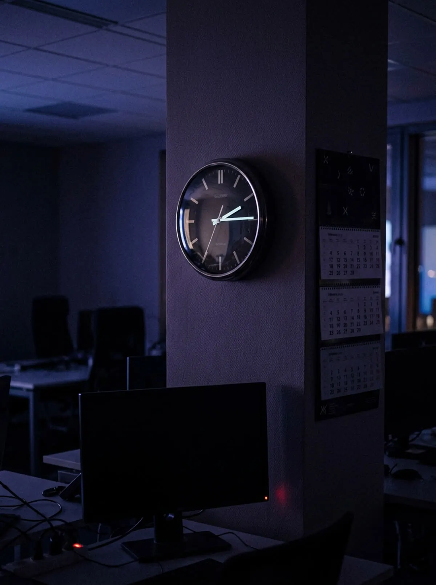
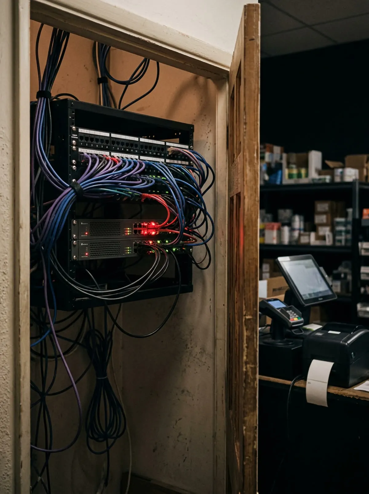

O expediente acaba.
O Konso continua dentro de cada máquina. A cada 10 minutos, uma leitura: rede, disco, impressora, aparelhos ligados.
Konso · assistência técnica para todo negócio · em piloto
Das 18h às 8h e no fim de semana, ninguém olha o parque. Descobrir quando o cliente liga é descobrir tarde, e sem saber o porquê.
O Konso continua dentro de cada máquina. A cada 10 minutos, uma leitura: rede, disco, impressora, aparelhos ligados.
Cai e volta em segundos. Fica na linha do tempo, sem alarme: uma oscilação só não é defeito.
No ritmo dos últimos dias, enche em duas semanas. Entra na próxima análise, antes de virar parada.
O aparelho USB do totem 2 desliga e volta em 40 segundos. É a terceira vez na semana.
O Konso monta a linha do tempo e ordena os suspeitos: cabo USB, porta, o próprio leitor.
O resto do parque segue lido e registrado. Nada mais a fazer até o dia clarear.
A volta fica registrada, mas o aviso continua de pé: quatro quedas em uma semana pedem conferência.
Quem chega encontra o aviso, a linha do tempo e o que conferir primeiro.

Na prática, a falha só é percebida quando o cliente liga ou a loja abre. Até lá a máquina segue parada, e ninguém registrou a hora.

O SLA costuma contar da falha, não do telefonema. Quando o chamado abre tarde, o prazo já nasce consumido.

Rede que cai derruba PDVs, totens e impressoras no mesmo ponto. Sem comparar as máquinas vizinhas, cada sintoma vira um chamado diferente.
Sem saber o que a máquina mostrou antes de parar, o técnico chega sem contexto e sem a peça. A visita é paga sem resolver.
Os números do vigia
Cada máquina manda o próprio retrato: rede, disco, impressora, aparelhos.
No horário da unidade. Fora delas, o alarme é analisado na hora.
A rede caiu? A máquina guarda as leituras e envia quando voltar.
Madrugada, domingo e feriado entram na mesma conta.
A operação só volta às 08:00 de segunda e o chamado abre depois disso.
A falha entra na leitura seguinte, com a hora e o que a máquina mostrava antes. Quem abre a operação já encontra o suspeito.
Um instalador e o código da sua conta: a máquina aparece no Konso. Ele se atualiza sozinho, com pacote assinado.
Konso · instalação código K7M2P-4QRTD empresa Mercado Aurora · Loja 2 máquina totem-2 instalado · primeira leitura enviada
Rede, disco, temperatura, impressoras e aparelhos USB, a cada 10 minutos. Sem internet, as leituras ficam guardadas por até 7 dias.
02:10 totem-2 leitura enviada rede ok · 18 ms disco 71% · saudável impressora pronta · papel ok usb leitor de cartão: ausente
As leituras viram uma linha do tempo: o que mudou antes da falha e o que se repete. Queda isolada fica registrada; padrão vira aviso, com os suspeitos em ordem.
totem-2 · leitor de cartão 00:03 caiu · voltou em 40 s 01:27 caiu · voltou em 2 min 02:14 caiu · 4ª vez em 7 dias suspeitos: 1 cabo USB · 2 porta · 3 leitor
O parque inteiro em uma tela: o que está certo, o que pede atenção e por quê. Cada aviso traz a hora e o que conferir primeiro.
totem-2 · Mercado Aurora · Loja 2 urgência alta aviso leitor de cartão caiu 4 vezes em 7 dias conferir cabo USB do leitor
O que tem solução conhecida, o Konso resolve à distância, com roteiro já testado. O que pede mão vai para um técnico da região. Só o caso resolvido é cobrado.
pdv-03 · fila de impressão presa roteiro reiniciar o serviço de impressão conferido impressora pronta · 3 leituras normais resolvido à distância · 02:31
O plano aberto vale para até 10 máquinas do seu próprio negócio. Termos de uso.
Como funcionam os créditos
Sem conversão escondida. No pacote, 1.000 créditos saem por R$ 950.
Por máquina, de 5 a 10. Com 4 máquinas, 60; com 10, 150 créditos por mês.
O crédito do plano que você não usar vale por 6 meses. O crédito comprado vale 12.
À distância gasta crédito. Visita no local: 460 créditos, preço único. Só o caso resolvido é cobrado.
Não. O Konso é um programa instalado na própria máquina: PDV, totem, quiosque ou computador. Sem sensor, sem caixa e sem trocar equipamento.
Com duplo clique. O instalador pede o código da sua conta e a permissão de administrador, uma vez. O Konso se atualiza sozinho, com pacote assinado.
O estado dela: rede, disco, temperatura, bateria, relógio, tela, impressoras e aparelhos USB, a cada 10 minutos. O Konso não registra o que é digitado.
O que tem solução conhecida, o Konso resolve à distância. O que pede alguém no local, a NovaSync atende com um técnico da região. Você decide quando pedir.
Até 3 máquinas, R$ 59 por máquina por mês. Até 10 máquinas, R$ 37 por máquina por mês, com 15 créditos por máquina. Vale para as máquinas do seu próprio negócio; com 11 ou mais, ou para máquinas instaladas em clientes, o pós-venda é sob proposta.
1 crédito vale R$ 1 e só é cobrado quando o caso é resolvido. A visita no local custa 460 créditos, com deslocamento incluso, dentro da área de atendimento do técnico. O crédito do plano que sobra vale por 6 meses; o crédito comprado, por 12 meses.
Está em piloto, para máquinas com Windows. Android e Linux são os próximos passos.
Se tem computador, o Konso cuida. A partir de R$ 37 por máquina, por mês. Ver os planos. Tem um parque espalhado? Veja o pós-venda para empresas.
Montar um piloto do Konso